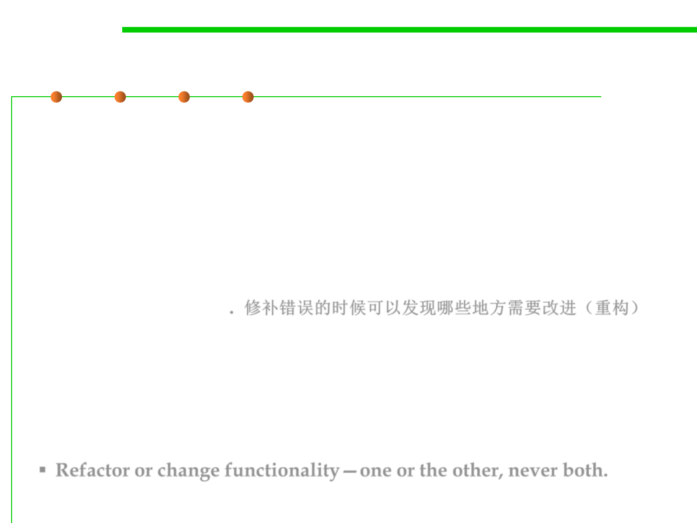

Fix and refactoring
7.4 Debugging
▪ Refactoring
– Refactoring is the process of improving the design of existing code
without changing its behavior. （See Ch 9）
▪ Bug fixing often uncovers opportunities for refactoring. The very
fact that you’re working with code that contains a bug indicates
that there is a chance that it could be clearer or better structured. It
is very likely that you will spot areas of code that could be
improved as you go. 修补错误的时候可以发现哪些地方需要改进（重构）
▪ There will be occasions where you choose to refactor after fixing
and other occasions where it makes sense to refactor first (because
doing so gets you to a state where it’s easier to fix the bug).
Occasionally, when working on a particularly intricate fix, you’ll
iterate back and forth between refactoring and bug fixing.
▪ Refactor or change functionality—one or the other, never both.